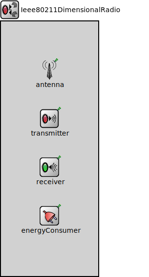

Package: inet.physicallayer.wireless.ieee80211.packetlevel
Ieee80211DimensionalRadio
compound moduleThis radio model uses dimensional transmission power (that changes over time and/or frequency) in the analog representation. It must be used in conjunction with the ~Ieee80211DimensionalRadioMedium model.
<b>See also:</b> ~Ieee80211DimensionalRadioMedium, ~Ieee80211DimensionalTransmitter, ~Ieee80211DimensionalReceiver, ~DimensionalAnalogModel.
Inheritance diagram
The following diagram shows inheritance relationships for this type. Unresolved types are missing from the diagram.
Extends
| Name | Type | Description |
|---|---|---|
| Ieee80211Radio | compound module |
This radio model is part of the IEEE 802.11 physical layer model. It supports multiple channels, different operation modes, and preamble modes. It must be used in conjunction with the ~Ieee80211RadioMedium model or other derived models. |
Parameters
| Name | Type | Default value | Description |
|---|---|---|---|
| radioMediumModule | string | "radioMedium" |
module path of the medium module where this radio communicates |
| energySourceModule | string | "" |
module path of the energy source module which provides energy to the radio |
| initialRadioMode | string | "off" | |
| switchingTimes | string | "ms 0 0 0 0 0 0 0 0 0 0 0 0 0 0 0 0 0 0 0 0 0 0 0 0 0" |
time parameters to switch between radio modes |
| sendRawBytes | bool | false |
when true packets are serialized into a sequence of bytes before sending out |
| separateTransmissionParts | bool | false |
when enabled the transmission of preamble, header and data part are simulated separately |
| separateReceptionParts | bool | false |
when enabled the reception of preamble, header and data part are simulated separately |
| displayCommunicationRange | bool | false |
if true communication range is displayed as a blue circle around the node |
| displayInterferenceRange | bool | false |
if true interference range is displayed as a gray circle around the node |
| centerFrequency | double | 2.412GHz |
center frequency of the band where the radio transmits and receives signals on the medium |
| bandwidth | double | nan MHz |
bandwidth of the band where the radio transmits and receives signals on the medium |
| signalAnalogRepresentation | string | "scalar" | |
| opMode | string | "g(mixed)" |
operation mode |
| bandName | string | "2.4 GHz" |
band name |
| channelNumber | int | 0 |
initial channel number within the band (TODO this is offset by 1) |
| crcMode | string | "declared" |
Properties
| Name | Value | Description |
|---|---|---|
| display | i=block/wrxtx | |
| class | Ieee80211Radio |
Gates
| Name | Direction | Size | Description |
|---|---|---|---|
| upperLayerIn | input | ||
| upperLayerOut | output | ||
| radioIn | input |
Signals
| Name | Type | Unit |
|---|---|---|
| radioChannelChanged | long |
Statistics
| Name | Title | Source | Record | Unit | Interpolation Mode |
|---|---|---|---|---|---|
| radioChannel | Radio channel | radioChannelChanged | histogram, vector | sample-hold |
Source code
// // This radio model uses dimensional transmission power (that changes over time // and/or frequency) in the analog representation. It must be used in // conjunction with the ~Ieee80211DimensionalRadioMedium model. // // @see ~Ieee80211DimensionalRadioMedium, ~Ieee80211DimensionalTransmitter, // ~Ieee80211DimensionalReceiver, ~DimensionalAnalogModel. // module Ieee80211DimensionalRadio extends Ieee80211Radio { parameters: transmitter.typename = default("Ieee80211DimensionalTransmitter"); receiver.typename = default("Ieee80211DimensionalReceiver"); }File: src/inet/physicallayer/wireless/ieee80211/packetlevel/Ieee80211DimensionalRadio.ned
 This documentation is released under the Creative Commons license
This documentation is released under the Creative Commons license